Rich Rabbit Country Club 欢迎来到富家兔乡村俱乐部 富家兔乡村俱乐部是 3333 只富家兔和幸运球手兔的生成集合。每只兔子都属于 24 Carrot 俱乐部，这是在 Metaverse 中运营的著名乡村俱乐部。这些兔
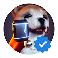 Rich Shiba Guild OfficiaI Rich Shiba Guild 是托管在以太坊区块链上的 5,555 个 NFT 的集合。 每个 Rich Shiba 都是独一无二的，是一件独特而详细的 3D 艺术品，基于 600 多个元素，灵感来自于 Shiba Inu 狗的财务乐观主
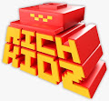 RichKidz Discord 用户有大约 5 天的领先优势。 Rich Kidz 持有者奖励代币的快照发生在美国东部标准时间今天下午 4:20。 之后，任何持有富家子的人都会得到这样的美： 附言 二
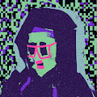 RIGHT CLICK SAVE AS CC0 右键单击另存为 CC0 统计信息 创建于 5 个月前 101代币供应 0% 费用 在过去的 7 天内没有售出 RIGHT CLICK SAVE AS CC0。 当我可以右键单击并另存为时，我为什么要购买它
RiseAngle RAM Collection 1 - World of Mazes Epic RiseAngle 概览 RiseAngle, Inc. 是破坏性游戏的开发商和发行商，这些游戏玩起来超级有趣，而且很有美德。RiseAngle 是第一家专注于良性游戏的游戏公司。我们相信沉
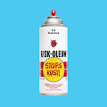 RISKROCK NFT 旅程开始。世界知名涂鸦艺术家 RISK (Kelly Graval) 设计了他的第一个 NFT 系列。这些作品不仅仅是艺术品，还代表了一种跨越虚拟和物理世界的动态体验。 12.1.21 Discord 上线。RIS
RIZ LA VIE RIZ LA VIE 统计数据 创建于 4 个月前 25代币供应 10% 费用 过去 7 天内没有出售任何 RIZ LA VIE。 由 RIZ LA VIE 在 Sound 上创建。在对这首歌发表评论 RIZ LA VIE NFT - 常见问题（F
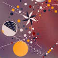 Robert Mondavi Winery x Bernardaud Collection 罗伯特蒙大维酒庄 x Bernardaud Robert Mondavi Winery 的灵魂——受到创始人 Robert Mondavi 的启发——是一位创造者、远见卓识和创新者的灵魂。凭借这些共同的特点和创造真正革命性的愿望，
Roman Gutikov x Editions Roman Gutikov x Editions 统计 创建于 2 个月前 7 代币供应 10% 费用 Roman Gutikov x Editions NFT 在过去 7 天内售出 11 次。Roman Gutikov x Editions 的总销售额为 494.01 美元。一份 Roman Gutikov x Editions NFT 的平均价格为 44.9 美
RR Comic - Chapters 2-8 of Volume 1 我们是起义者。 这是第 1 卷的叛逆兔漫画第 2 章封面的合集。 第 2 章封面可兑换 3D 元界可穿戴设备！ Rebel Rabbit 超越了金融操纵的旧世界，转而支持分散的数字价值存
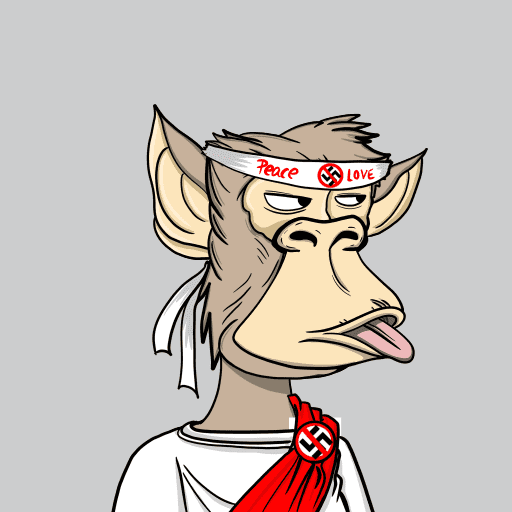 RRAPE RRAPE NFT - 常见问题（FAQ） ▶ 什么是 RRAPE？ RRAPE 是一个 NFT（不可替代代币）集合。存储在区块链上的数字艺术品集合。 ▶ 存在多少个 RRAPE 代币？ 总共有 1,110
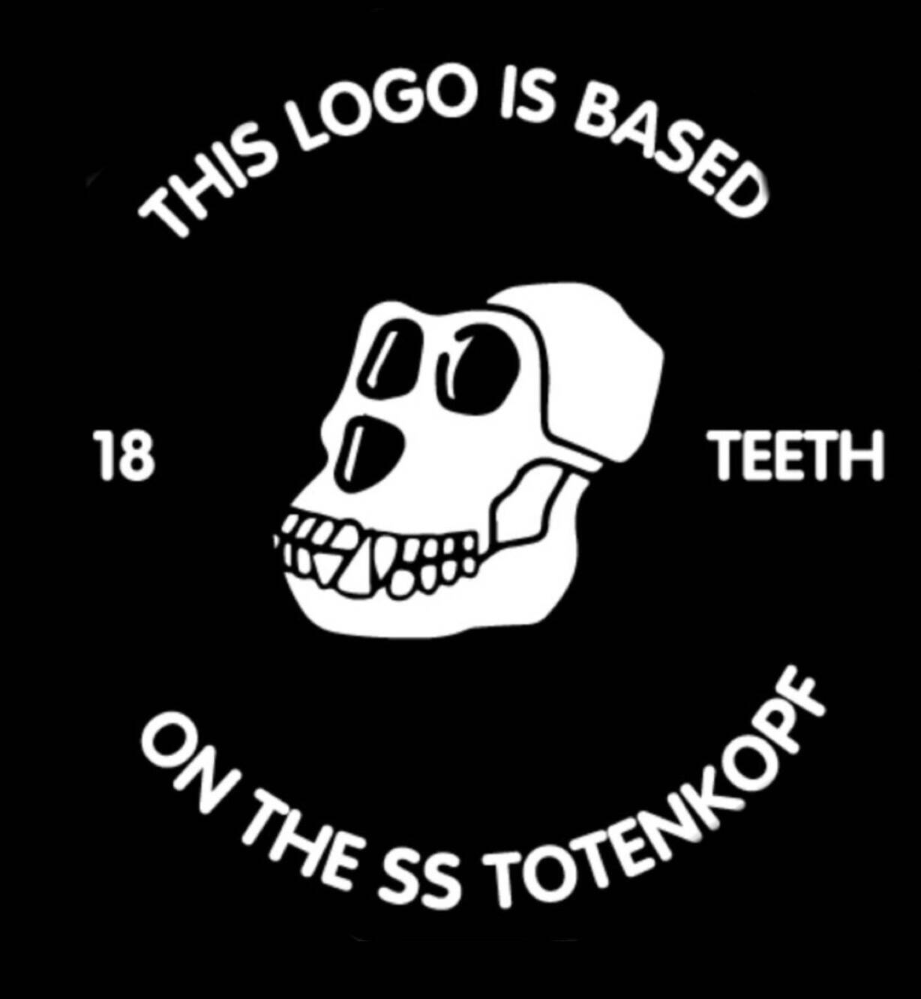 RRBAYC OFFICIAL Ryder Ripps 2021 年 6 月 14 日，我在以太坊区块链上重新铸造[了 CryptoPunk #3100]，该图像的原始代币于 2021 年 3 月 11 日以创纪录的 758 万美元售出。 你不能复制 NFT RRBAYC 使用讽刺和挪
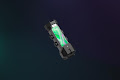 RTFKT SKIN VIAL EVO X NFTs RTFKT 皮肤小瓶可让您更改 RTFKT x NIKE DUNK GENESIS CRYPTOKICKS 或任何兼容 CRYPTOKICKS 与限量版皮肤的外观。 RTFKT 的第一个 Skin Vial Tech 系列 EVO X 具有 8 个基于 Clone X DNA 的进化皮肤 请阅读：由于区块链在购买
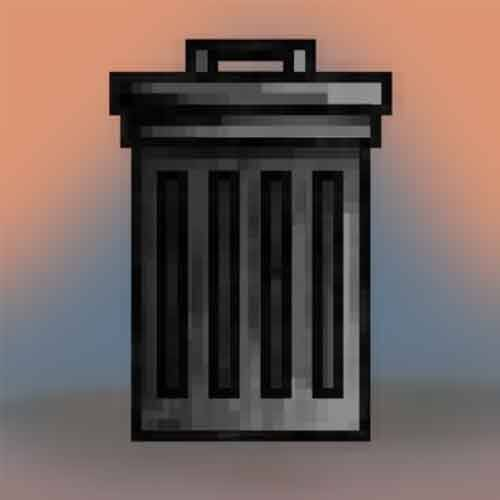 Rubbish Trash 垃圾垃圾 NFT - 常见问题 (FAQ) ▶ 什么是垃圾？ 垃圾垃圾是 NFT（不可替代令牌）集合。存储在区块链上的数字艺术品集合。 ▶ 有多少垃圾垃圾代币？ 总共有 1 个垃
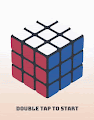 Rubik NFT Rubik’s NFT 是一种 NFT 形式的互动游戏。玩并尝试在 3D 环境中解决您独特的立方体。 Rubik NFT NFT - 常见问题（FAQ） ▶ 什么是魔方 NFT？ Rubik NFT 是一个 NFT（不可替代代
Ruby Red Ruby Red 是目前由 Fernando Fine（空气吉他、otamatone、4d 建模、公共关系、私人关系、贝斯）和 Daniel Laner（键、呜咽 + 附加声乐、小额索赔诉讼、
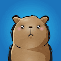 Rufus a Master of Disguise 认识鲁弗斯、豚鼠和尼比（猫）最好的朋友和终生伴侣。作为伪装大师，鲁弗斯可以伪装成隐藏在 167 个不同国家/地区的 1,100 个独特的人物。鲁弗斯和他的许多伪
Rug Dealers Anonymous 作为恢复的退化者，我们承认我们的无能为力并将控制权交给全能的国王 Incooom。抓住这个筹码，表明你对国王的信心！ Incooom Genesis 活动期间铸造了54 副5
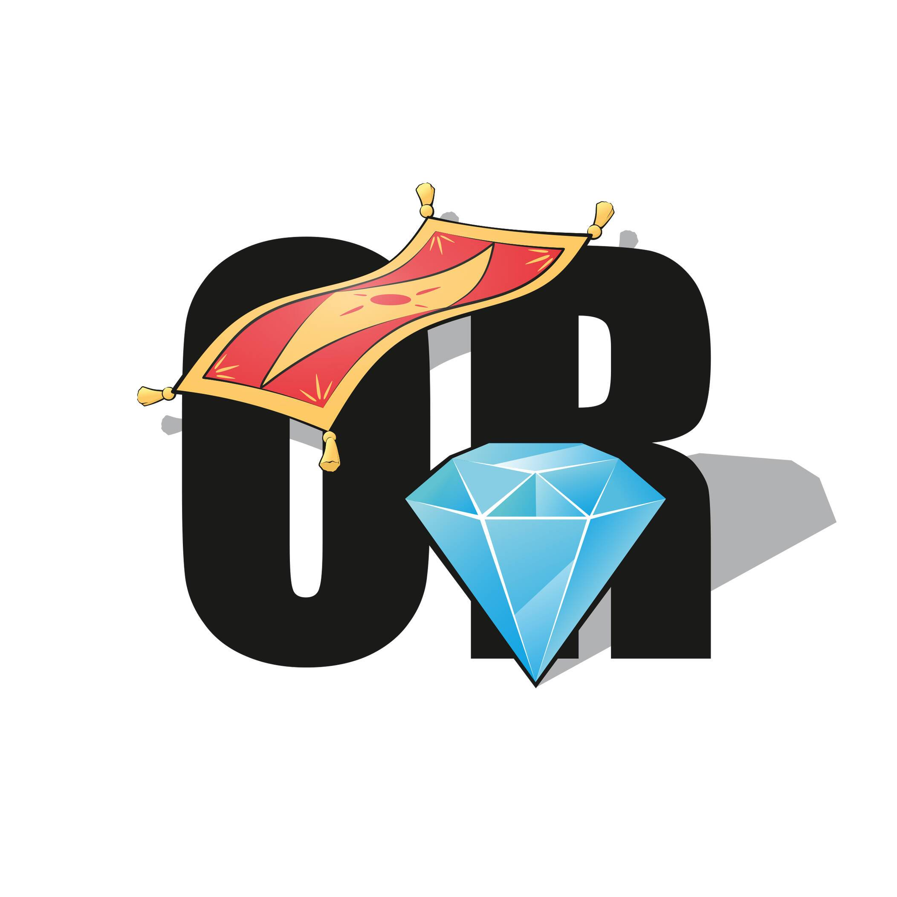 Rug or Diamond ( DIAMOND COLLECTION ) 匿名团队，没有路线图，没有不和谐。 只有 Twitter 和这个糟糕的网络。 这显然只是另一个地毯项目。 简而言之，这是生活在以太坊区块链上的 2000 个 ERC-721 代币的集合。在
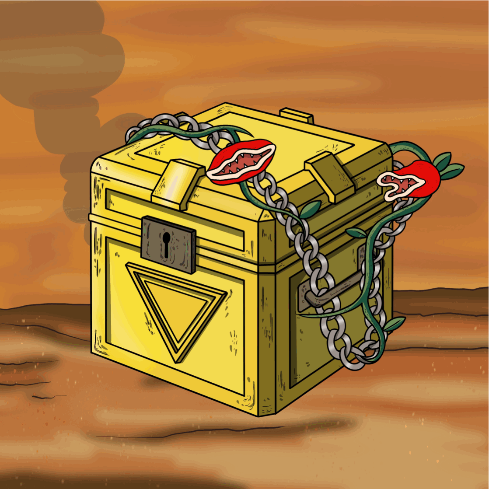 Rug Or Rich ▶ 什么是地毯或财富？ Rug Or Rich 是一个 NFT（非同质化代币）集合。存储在区块链上的数字艺术品集合。 ▶ 有多少个 Rug 或 Rich 代币？ 总共有 7,833 个 Rug 或 Rich NFT。目
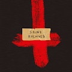 Saint Archives 圣档案馆是一系列抽象表现主义艺术。 逃避和理想化。 共同的主题包括性、痛苦、救赎、生与死。 SVINT 艺术收据持有人收到用我自己的 Manifold 智能合约铸造的未来新版
salem ilese 销售米尔斯 由 Salem ilese 在 Sound 上创建。 对这首歌发表评论 salem ilese 的总销售额为 311.67 美元。 一个 salem ilese NFT 的平均价格为 77.9 美元。 有 658 名 salem ilese 所有者，总共拥有 864 个代币。 什么是
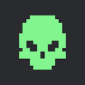 Salty Pirate Crew Salty Pirate Crew 正在打造世界上第一个 web3 海盗体验 - Saltyverse。 我们是一个基于经验的项目。 举办虚拟派对和 IRL 派对。 拥有我们生态系统中一些最伟大的艺
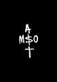 Samot Golden Coin 这枚稀有的金币是在萨莫特的宝库中发现的。 允许访问我们 discord 的 Alpha 频道，Maev 在这里分享他对市场、即将开展的项目和有趣想法的所有想法。 可能还包括一
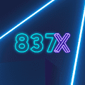 Samsung 837x Collection Badges 三星 837X 系列是通向 Web3 世界的门户，展示了 NFT 徽章和独特的可穿戴系列供所有人欣赏。 这些定制的 NFT 是艺术、时尚和韩国文化的碰撞。 三星 837x 系列徽章的总销售额
Samsung 837X You Make It Collection 三星 837X 的最新系列包括 12,501 件由 Pixelmind 提供支持的定制 NFT 艺术作品。 每件作品都是三星 837X Decentraland 的 You Make It 任务中的独特选择，该任务通过定制来彰显个性。 三星 837X You Make It Collection
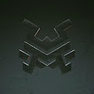 Samurai Saga - The Fallen 让自己沉浸在 Samurai Saga 的赚钱在线游戏中的第三人称体验中。使用虚幻引擎构建，可通过动感十足的多人游戏模式获得最佳游戏体验。 Samurai Saga 将开放世界的探索与快节
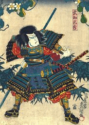 Samurai | Akane Yin 武士都是用爱和关怀手绘的。 444 件。 没有实用程序，没有路线图，只有艺术。 感谢您的支持 武士的总销量| Akane Yin 是 166.1 美元。 一个武士的平均价格| Akane Yin NFT 为 10.4 美
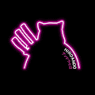 SamuraiCats by Hiro Ando Crazy Noodles Gang 由日本艺术家 Hiro Ando 创建，从以太坊区块链上的 4747 只武士猫系列开始。 加入我们的 Hiro Ando 的 SamuraiCats 是什么？ Hiro Ando 的 SamuraiCats 是一个 NFT（不可替代令牌）集合。存储在
Samurices Samurices 是 7,777 种独特的 Onigiris 的美味集合，由 200 多种特征组合而成，其中一些特征比其他特征更罕见，所有灵感都来自以太坊区块链上的食物和亚洲文化。 所有厨师学徒的
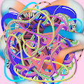 Sandworms by Jaime Derringer 自 2006 年开始我的艺术实践以来，我一直在画冥想、绳索和蛇状的图画。它们代表了我们每天必须处理的错综复杂的思想和情感网络。 对于焦虑和抑郁的人来说，
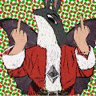 Santametti Santametti (SANTA) 是艺术家 Pumpametti 的艺术 NFT 收藏。 这是所有 Metti ETH NFT 持有者的假期免费铸币厂。 共有 1000 个圣诞老人可用。 VIP 为 Pumpametti 持有者保留免费薄荷，300 SANTA 可用。 先到先得免费
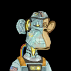 SAP GENESIS ACCESS Space Ape 计划 (SAP) GENESIS ACCESS 是您进入 SPACE APE 学院和整个 SAP 世界的注册。 欢迎来到太空计划！SAP是一场跨IP NFT太空竞赛。太空猿计划//访问ID卡//使您向太空
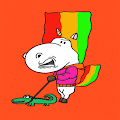 Sassy Unicorns Sassy Unicorns Sassy Unicorns 是独特的、手工制作和随机生成的 2D NFT 社交头像，用于您的在线体验。 有些看起来很正常。 有些看起来很奇怪。 有些简直太酷了！ 也许有些人甚至看起来很
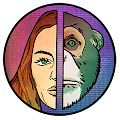 SatoshiFaces SatoshiFaces 是 4999 个 NFT 的集合——在以太坊区块链上开发的独特数字收藏品。 Faces 分为两章，从 Genesis 开始，它由生活在 Satoshi 宁静世界中的 3000 个 NFT 组成。 在第 2 章：出埃及记中，情
Satoshis Legions Presale Tokens 重要请阅读 21 年 11 月 22 日美国东部标准时间下午 12:00 拍摄了所有代币持有者的快照。 在该日期之后购买或转让的任何代币都不能用于领取退伍军人证。 中本聪的军
Satoshiverse Collectibles 欢迎来到中本聪！The Satoshiverse是Apollo NFT Studios，Jose Delbo和NFT社区YOU之间的史诗漫画NFT合作。
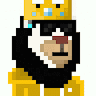 Savannah Pixels 不隶属于任何其他项目。萨凡纳像素狮子包含 75 个特征。随机生成并存在于以太坊区块链上。Savannah Pixels NFT - 问题常见（FAQ） ▶ 什么是萨凡纳像素
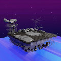 Savannah.Land.Y2123 受 Zoo Tycoon 和 Tamagotchi 的启发，您必须通过在其上找到合适的动植物 NFT 生态平衡，将您的 Land NFT 恢复到良好的健康状态。将分阶段发布4个栖息地，包括萨凡纳、海洋、热带